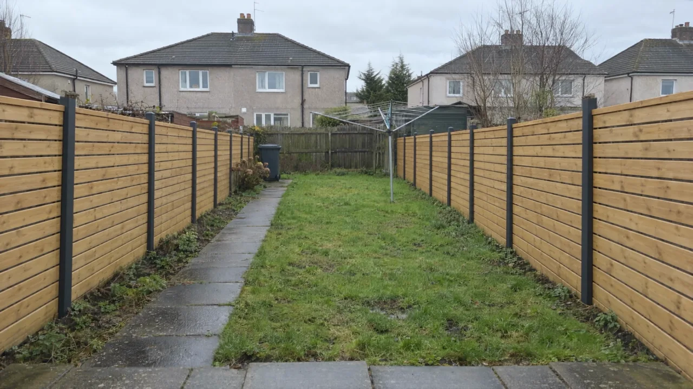
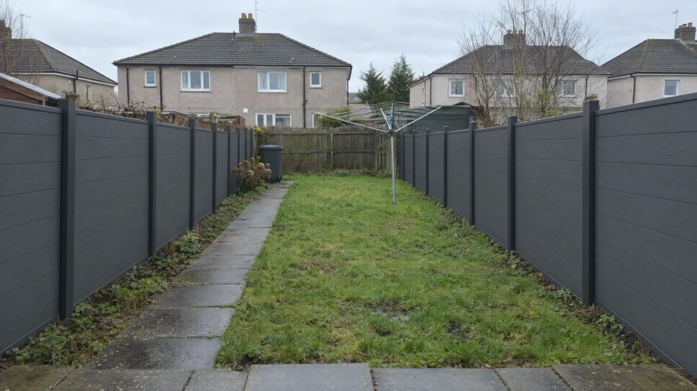
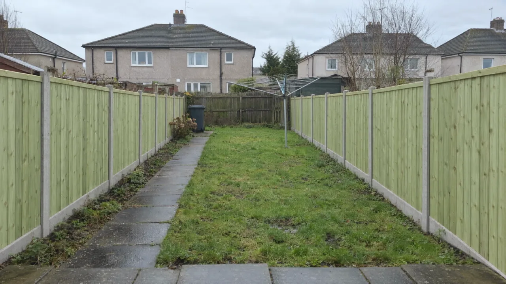
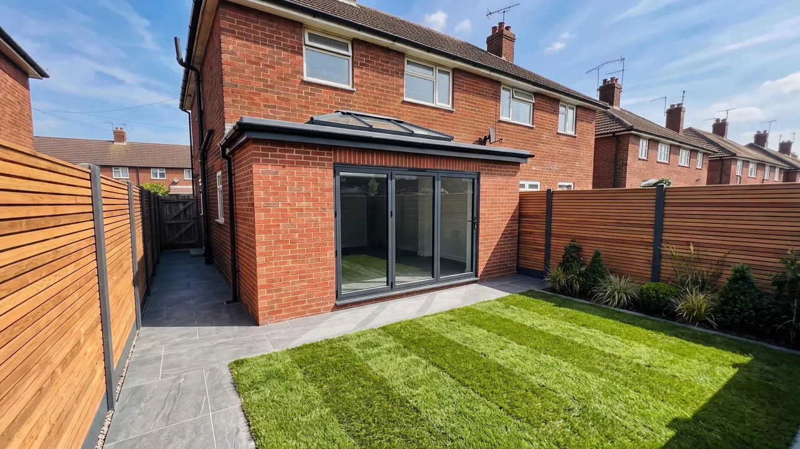

Fence styles
What each fence style looks like
Horizontal slatted, closeboard, hit and miss and composite, finished. Tap through the picker on the home page to watch a tired fence change, then price the style you like.




